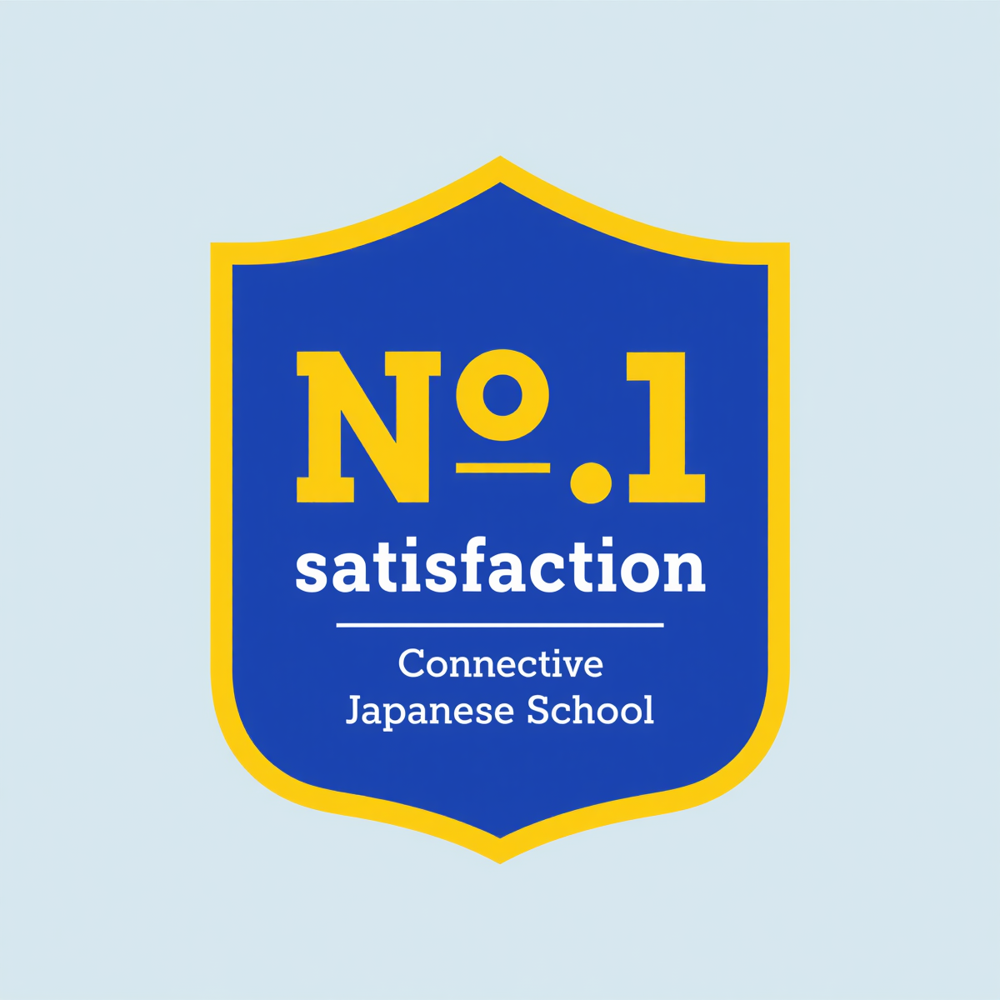
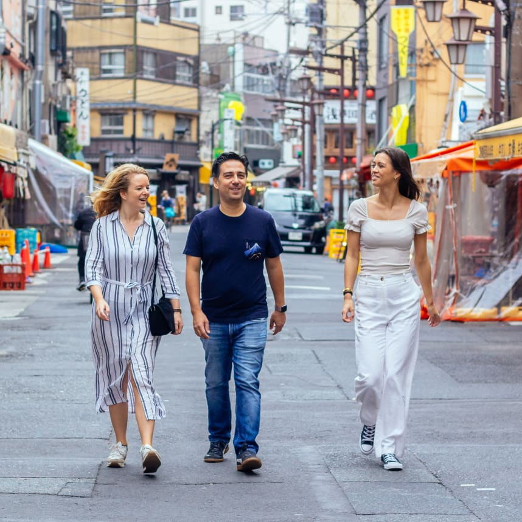
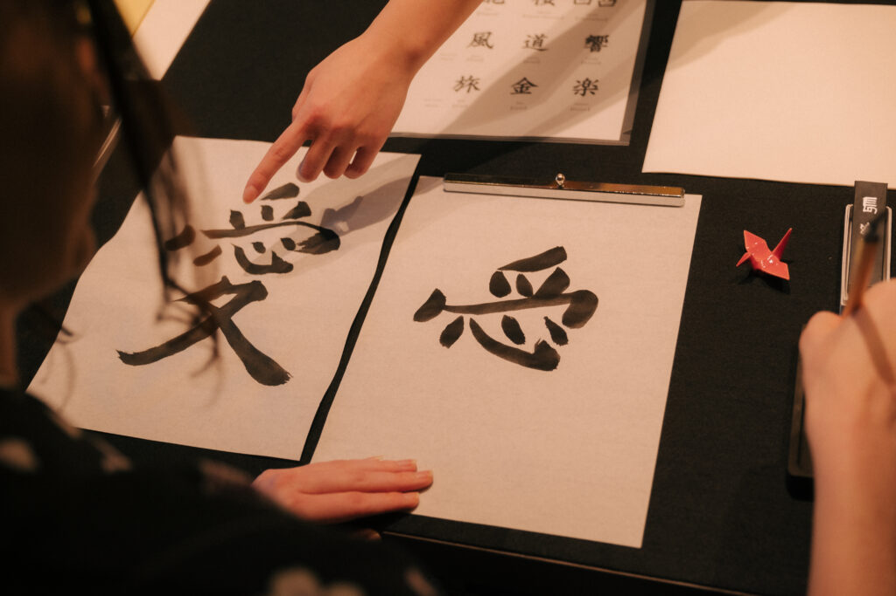

A Japanese language school built for travelers —
learn through the city and cultural activities.

No.1 in Student Satisfaction
We prioritize genuine "connections" that go beyond traditional language education. Thanks to the high praise from our students, we have been ranked No.1 in customer satisfaction within our category.
Every day is a mix of real conversation practice and Tokyo exploration — alongside fellow travelers from around the world.
Four mornings of immersive Japanese conversation in a cozy Tokyo café — then hit the streets together.
Two mornings of conversation practice followed by exclusive cultural experiences — only for Chat Japanese students.
Traditional language schools ask a lot from you. We believe there's a better way — and we've built it.
All you need is the desire to speak and a curious heart.
Start Your Journey →Chat Japanese Tokyo is designed for travelers and learners who want more than just a textbook — those who want to truly connect with Japan.
Our immersive, conversation-first curriculum is built for rapid progress. No grammar drills — just real talk, real situations, real results. You'll be holding basic conversations in Japanese within days.
Why choose between tourism and study? Our lessons happen in Tokyo's most vibrant neighborhoods — cafes, markets, temples, and galleries. Every lesson is an adventure, and every adventure is a lesson.
Imagine ordering ramen in Japanese, chatting with a shopkeeper in Asakusa, or sharing a laugh with a local at a tea ceremony. We give you the language tools to make those moments happen.
We've reimagined language education from the ground up — combining immersive learning, Tokyo exploration, and authentic cultural experiences into one unforgettable program.
Begin your Japanese journey in as little as 2 days. Our flexible short-term courses start at $130 USD, making immersive language education accessible without a long-term commitment or a hefty price tag.
From $130 · Min. 2 days
After every lesson, explore Tokyo's hidden gems alongside our charismatic local instructors. Practice what you've just learned in real conversations as you discover the city's neighborhoods, markets, and landmarks together.
Every weekday · With friendly instructors
Every Saturday and Sunday, dive deep into authentic Japanese culture through exclusive activities — matcha tea ceremonies, shodo calligraphy classes, ramen-making workshops, and more. These experiences are available only to Chat Japanese students.
Every weekend · Exclusive to studentsJoin our grand opening cohort and experience the most exciting way to learn Japanese — starting April 13.
To celebrate our grand opening in Tokyo, we're offering two exclusive deals for our first students. These offers are strictly time-limited — don't miss out.
For a limited time only, the registration fee is completely waived for all new students. Sign up now and save $30 — no catch, no hidden fees.
Available for all courses. Offer valid while grand opening promotion lasts.
Claim Free Registration →If the course isn't what you imagined, we'll refund every cent — no questions asked. We're that confident you'll love the Chat Japanese experience.
Valid until June 30. Applicable to the 1-Week Course and Intensive Course only.
⚠ Refund requests made after the second lesson [Tue] has commenced will not be accepted.
Learn More →Join the ChatCommunity and keep learning wherever your travels take you — across Japan and beyond. One community, endless destinations. You choose your own path.
Start your Japanese journey in the city's most vibrant neighborhoods — Shibuya, Asakusa, Shinjuku. Hold your first real conversations from day one.
Continue in another Japanese city of your choice. Our community is growing across Japan — keep the momentum going wherever you go next.
Ready to explore Asia further? Switch to Korean, Thai, or Chinese with the same immersive method — and the same community backing you up.
Complete consecutive weeks at any ChatCommunity location and unlock exclusive discounts on your next course. Discounts apply across all cities and all languages — mix and match however you like. Your journey, your rules.
Explore the Community →Our team writes about local culture, language tips, hidden gems in Tokyo, and the real stories behind the places you'll visit during your course. It's the perfect companion for curious travelers who want to go deeper.
Visit Localism.blog →Taiyo Iino
Founder & Head Instructor, Chat Japanese Tokyo
"I've seen too many people give up on Japanese because they were told it required years of expensive classes and endless hours at a desk. I knew there had to be a better way."Start Your Journey →
"It wasn't just sitting in a classroom; I actually went out into the city to use Japanese. The instructors are so friendly!"
Mark S. (Germany)"I wanted to learn expressions useful for work. Chat Japanese's curriculum is very practical and helped me immediately."
Anjali R. (India)"I came from Indonesia alone, but I made so many friends here. The cultural activities were especially fun!"
Budi H. (Indonesia)Join Chat Japanese Tokyo and discover the most immersive, affordable, and unforgettable way to learn Japanese — right in the heart of the city.